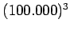
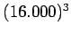

Nächste Seite: Zweck und Aufbau dieser Aufwärts: Diplomarbeit Vorherige Seite: Inhalt Inhalt
Den Anstoß zu einem um Größenordnungen umfangreicheren Simulationsgebiet brachte Herr Prof. Dr. Westermann, als er vorschlug, Zellinformationen nur noch beim Partikel zu speichern und nach diesem Zellindex die Partikel zu sortieren. Durch diese implizite Anordnung der Zellen wird erreicht, dass der Speicherbedarf unabhängig von der Größe des simulierten Gebiets wird und meine Software keine 15MB benötigt, um 3000 Partikel in einem Gebiet bestehend aus
 
Laut Nick Fosters & Ronald Fedkiws ,,Practical animation of liquids`` [1] wurde z.B. für die Simulation der Schlammdusche von Dreamworks ,,Shrek`` lediglich ein Gitter von 150 x 200 x 150 Zellen verwendet.
Um auf meiner Datenstruktur Physik berechnen zu können und vor allem um die zugehörige Oberfläche zu konstruieren, sind allerdings sehr spezialisierte Ansätze gefragt.
So orientiert sich diese Arbeit im Groben an [2] von Matthias Müller, David Charypar & Markus Gross, passt deren Ansätze aber auf die erwähnte Datenstruktur an.
Außerdem wird die auf ATI-Grafikkarten vorhandene TRUFORM
 -Erweiterung genutzt, um auf einem relativ groben Gitter mittels des Marching Cube Algorithmus erzeugte, durch ebene Teilflächen charakterisierte, also eckige,
Oberflächen rund darzustellen.
-Erweiterung genutzt, um auf einem relativ groben Gitter mittels des Marching Cube Algorithmus erzeugte, durch ebene Teilflächen charakterisierte, also eckige,
Oberflächen rund darzustellen.